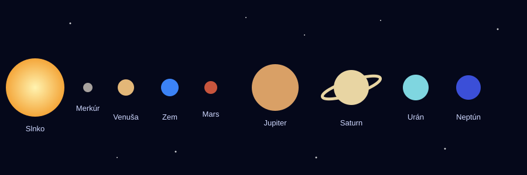

Cesta slnečnou sústavou
Vitajte na webe
Tento web je o našej kozmickej domovine. Nájdete tu tabuľku planét, slovník základných pojmov, prehľad najznámejších misií a galériu. Naša sústava vznikla pred približne 4,6 miliardami rokov ≈ 4 600 000 000 rokov.
Klikateľná mapa sústavy
Kliknutím na planétu prejdete na jej riadok v tabuľke. Kliknutím na Slnko sa dozviete, čo je hviezda.
